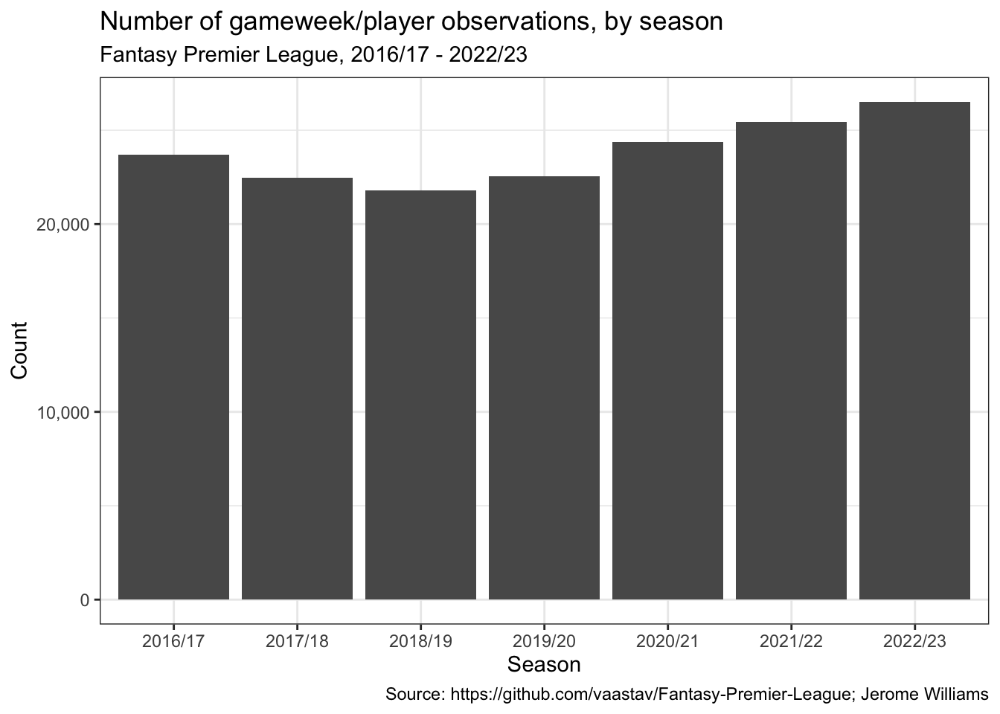
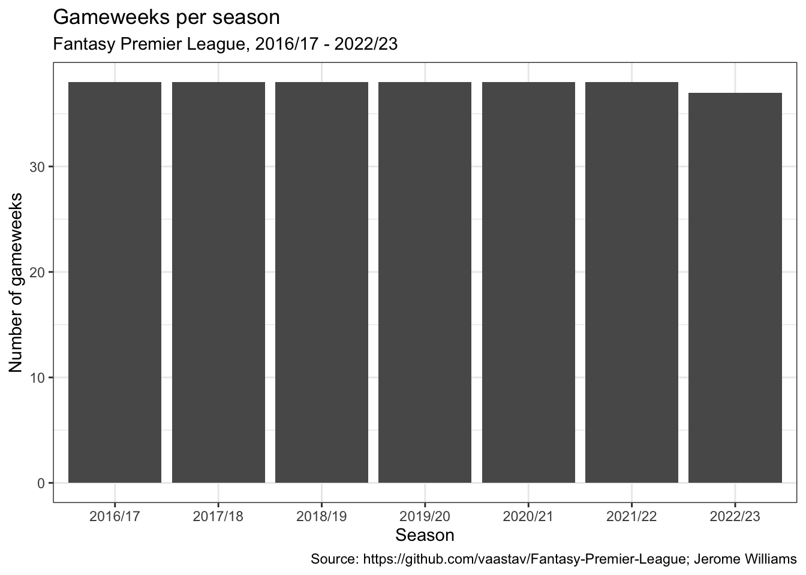
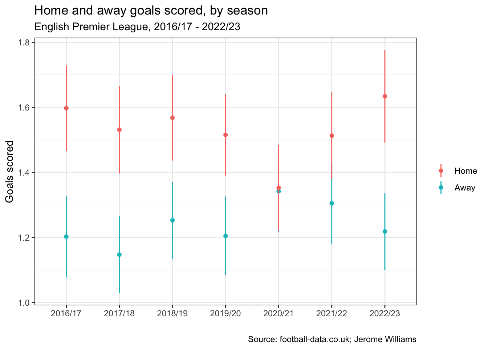
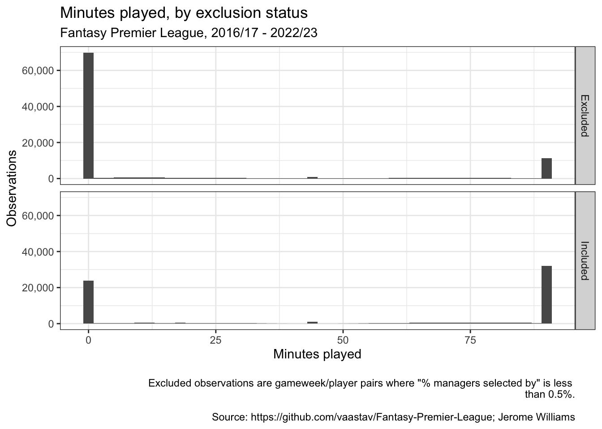
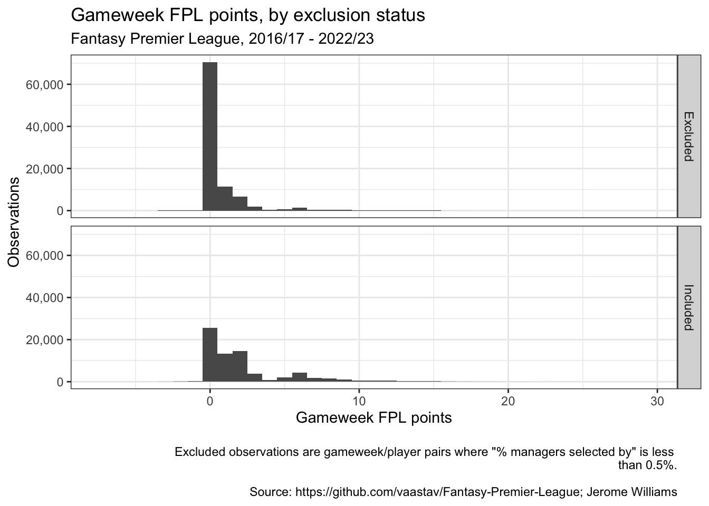
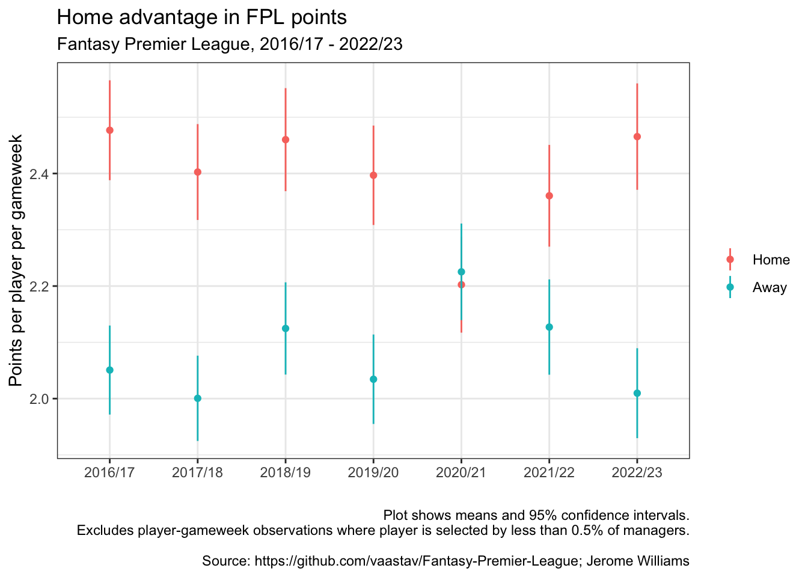
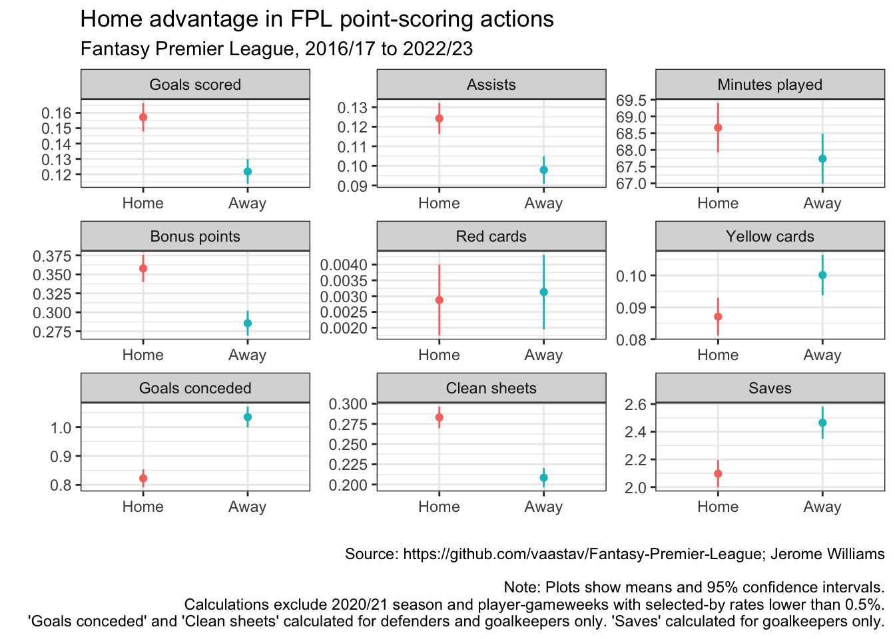
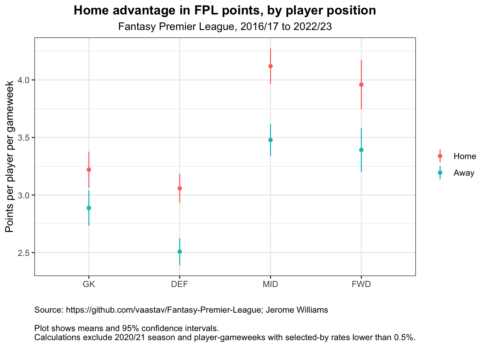

We will use data from the Fantasy Premier League data project, which I have downloaded separately. The data is stored season by season, so we first combine. For each season, we have to merge gameweek data (in merged_gw.csv) with player information (in players_raw.csv)
We have 166,813 observations (player/gameweek pairs).
Later on, we will need to look ‘Percent selected by,’ for each player/gaemweek observation, i.e., the percentage of FPL managers who selected a given player in a give gameweek. To calculate ‘Percent selected by,’ we need data on the total number of managers, which we have from the Manager Count dataset.
Rows: 17 Columns: 4
── Column specification ────────────────────────────────────────────────────────
Delimiter: ","
chr (2): season, notes
dbl (2): gw1count, gw38count
ℹ Use `spec()` to retrieve the full column specification for this data.
ℹ Specify the column types or set `show_col_types = FALSE` to quiet this message.
Let’s ensure we have position data for all observations.
As a check, let’s plot the number of observations per season.
ggplot(gw) +geom_bar(aes(x = season)) +scale_y_continuous(labels = scales::number_format(big.mark =",")) +theme_bw() +labs(title ='Number of gameweek/player observations, by season',subtitle ='Fantasy Premier League, 2016/17 - 2022/23',x ='Season',y ='Count',caption = source_string)

Let’s also check the number of distinct gameweeks per season. We should have 38 gameweeks per season.
by_season <- gw %>%group_by(season) %>%summarize(n_gameweeks =n_distinct(GW))ggplot(by_season) +geom_col(aes(x = season, y = n_gameweeks)) +theme_bw() +labs(title ='Gameweeks per season',subtitle ='Fantasy Premier League, 2016/17 - 2022/23',x ='Season',y ='Number of gameweeks',caption = source_string )

Team level data from football-data.co.uk
Our FPL data does not have team-level results for every season we are interested in, so we’ll also use data from <www.football-data.co.uk>. Let’s load this data as well.
Before we consider home advantage in FPL points for individual players, let’s confirm that we see home advantage in team-level outcomes. Specifically, let’s plot win rate and goals scored for teams playing at home and teams playing away.
We will use the <football-data.co.uk> dataset for this. Because the data has a single row for each match (with e.g. home goals and away goals stored in separate fields), let’s reshape so that we have a single row for each match-team observation.
fd_home <- fd %>%select(season,date = Date,team = HomeTeam,opponent = AwayTeam,goals_scored = FTHG, # full time home goalsgoals_conceded = FTAG, # full time away goals FTR) %>%mutate(home_away ='Home',result =case_when(FTR =='H'~'W', # full time result FTR =='A'~'L', FTR =='D'~'D'),win = (result =='W'))fd_away <- fd %>%select(season,date = Date,team = AwayTeam,opponent = HomeTeam,goals_scored = FTAG,goals_conceded = FTHG, FTR) %>%mutate(home_away ='Away',result =case_when(FTR =='H'~'L', FTR =='A'~'W', FTR =='D'~'D'),win = (result =='W'))fd2 <-bind_rows(fd_home, fd_away)
Team-level home advantage in win rate
Now that we’ve have created our home/away dataset, let’s plot the mean win rate, by season and by home/away.
`summarise()` has grouped output by 'season'. You can override using the
`.groups` argument.
ggplot(win_rate_stats, aes(x = season, color = home_away)) +geom_point(aes(y = mean)) +geom_linerange(aes(ymin = mean -1.96* se,ymax = mean +1.96* se)) +theme_bw() +labs(title ='Home and away win rates, by season',subtitle ='English Premier League, 2016/17 - 2022/23',color ='',x ='',y ='Win rate',caption ='Source: football-data.co.uk; Jerome Williams' )
Interestingly, we see that home advantage disappeared completely in the 2020/21 season. The 2020/21 was played “behind closed doors,” i.e., without supporters in stadiums, because of the COVID-19 pandemic. It is well documented that the behind-closed-doors season resulted in diminished home advantage. Indeed, this natural experiment has provided insight into the sources of home advantage ….
Home advantage is also smaller in the 2021/22 season, when a limited numbers of supporters began to be allowed back into stadiums.
Apart from 2020/21 and 2021/22, home advantage in other seasons is pronounced and fairly consistent. Home win rates tend to be between 0.45 to 0.5, while away win rates tend to be between approximately 0.28 and 0.35.
Team-level home advantage in goals scored
Let’s check whether home advantage also shows up in goals scored. It should, given the likely high correlation between goals scored and win rate.
`summarise()` has grouped output by 'season'. You can override using the
`.groups` argument.
ggplot(win_rate_stats, aes(x = season, color = home_away)) +geom_point(aes(y = mean)) +geom_linerange(aes(ymin = mean -1.96* se,ymax = mean +1.96* se)) +theme_bw() +labs(title ='Home and away goals scored, by season',subtitle ='English Premier League, 2016/17 - 2022/23',color ='',x ='',y ='Goals scored',caption ='Source: football-data.co.uk; Jerome Williams' )

Indeed, we see a similar home advantage in goals scored with the effect disappearing in 2020/21 and smaller in 2021/22. Outside of those two seasons, home teams tend to score 1.5-1.6 goals, on average, while away teams tend to score 1.15-1.25 goals, on average.
Home advantage in player points
Now that we’ve confirmed that home advantage obtains at the team-level, let’s turn to our question of interest: do players playing at home score more FPL points on average than players playing away?
To answer this question, we’ll turn the Fantasy Premier League dataset.
Home advantage in FPL points per player per gameweek
Filtering to FPL-relevant players
The FPL game generally includes a complete squad for each Premier League team. However, a team’s complete squad generally includes several players who play only a small number of minutes over the course of a season and who therefore tend not to be relevant to the game. We want to exclude these players from the analysis: they will generally score zero points, whether or not their team plays at home or away. We want to focus instead on the players whom FPL managers would actually select. To restrict to game-relevant players, I filter to players who are selected by at least 0.5% of managers in the relevant gameweek.
Before filtering, let’s check the average minutes played and average FPL points for included and excluded observations. We
gw_check <- gw %>%mutate(included =if_else(pct_selected >=0.005, 'Included', 'Excluded'))ggplot(gw_check) +geom_histogram(aes(x = minutes), binwidth =2) +facet_grid(included ~ .) +theme_bw() +scale_y_continuous(labels = scales::comma_format()) +labs(title ='Minutes played, by exclusion status',subtitle ='Fantasy Premier League, 2016/17 - 2022/23',y ='Observations',x ='Minutes played',caption ='Excluded observations are gameweek/player pairs where "% managers selected by" is less \nthan 0.5%.Source: https://github.com/vaastav/Fantasy-Premier-League; Jerome Williams')

The plot above shows that, by dropping player/gameweek observation with selection rates less than 0.5%, we mostly exclude non-playing players. Included observations include many with zero minutes played, but that is to be expected: there is nothing stopping a player owned by many managers from playing zero minutes in a particular, whether because of injury or rotation or any othe reason.
Let’s also compare FPL points scored for included/excluded observations.
gw_check <- gw %>%mutate(included =if_else(pct_selected >=0.005, 'Included', 'Excluded'))ggplot(gw_check) +geom_histogram(aes(x = total_points), binwidth =1) +facet_grid(included ~ .) +theme_bw() +scale_y_continuous(labels = scales::comma_format()) +labs(title ='Gameweek FPL points, by exclusion status',subtitle ='Fantasy Premier League, 2016/17 - 2022/23',y ='Observations',x ='Gameweek FPL points',caption ='Excluded observations are gameweek/player pairs where "% managers selected by" is less \nthan 0.5%.Source: https://github.com/vaastav/Fantasy-Premier-League; Jerome Williams')

As expected, excluded observations are more likely to zero score FPL points than included observations.
Plotting home advantage
Now that we’ve established that filtering out observations with ‘% selected by’ less than 0.5% is sensible, let’s proceed with analyzing player-level home advantage in FPL points.
`summarise()` has grouped output by 'home_away'. You can override using the
`.groups` argument.
ggplot(home_away_stats) +geom_point(aes(x = season, y = total_points_mean, color = home_away)) +geom_linerange(aes(x = season, ymin = total_points_mean -2*total_points_se,ymax = total_points_mean +2*total_points_se,color = home_away)) +theme_bw() +labs(title ='Home advantage in FPL points',subtitle ='Fantasy Premier League, 2016/17 - 2022/23',x ='',y ='Points per player per gameweek',color ='',caption =paste0('Plot shows means and 95% confidence intervals.Excludes player-gameweek observations where player is selected by less than 0.5% of managers.\n\n',source_string))

We have confirmed that home advantage exists in FPL: players score more FPL points on average in gameweeks when their team plays at home than in gameweeks when their team plays away. Following the same pattern as team-level home advantage, FPL home advantage disappears in 2020/21 and is reduced in 2021/22.
Sources of home advantage: player position and point-scoring actions
Let’s examine the sources of FPL home advantage. FPL points are based on a variety of different point-scoring actions, detailed in the table below.
Let’s plot the average count for all point-scoring actions by home and away. For this analysis, we will exclude the 2020/21 season, since home advantage did not accrue.
df_for_source_analysis <- home_away_data %>%filter(season !='2020/21')vars_for_all_players <-list('minutes', 'goals_scored','assists','bonus','red_cards','yellow_cards')calc_stats <-function(df, var_, ...) {tibble(mean =mean(df[var_] %>%pull()),se =std.error(df[var_]))}all_stats <-tibble()for (var in vars_for_all_players) { temp <- df_for_source_analysis %>%group_by(home_away) %>%group_modify(function(df, ...) { calc_stats(df, var, ...) }) %>%mutate(var = var) %>%mutate(var =case_when(var =='assists'~'Assists', var =='goals_scored'~'Goals scored', var =='bonus'~'Bonus points', var =='minutes'~'Minutes played', var =='red_cards'~'Red cards', var =='yellow_cards'~'Yellow cards')) all_stats <- all_stats %>%bind_rows(temp)}all_stats
# A tibble: 12 × 4
home_away mean se var
<fct> <dbl> <dbl> <chr>
1 Home 68.7 0.375 Minutes played
2 Away 67.7 0.383 Minutes played
3 Home 0.157 0.00472 Goals scored
4 Away 0.122 0.00408 Goals scored
5 Home 0.124 0.00401 Assists
6 Away 0.0979 0.00360 Assists
7 Home 0.358 0.00916 Bonus points
8 Away 0.286 0.00834 Bonus points
9 Home 0.00288 0.000574 Red cards
10 Away 0.00313 0.000601 Red cards
11 Home 0.0871 0.00302 Yellow cards
12 Away 0.100 0.00323 Yellow cards
def_gk <- df_for_source_analysis %>%filter(position =='GK'| position =='DEF')def_gk_vars <-list('clean_sheets', 'goals_conceded')def_gk_stats <-tibble()for (var_ in def_gk_vars) { temp <- def_gk %>%group_by(home_away) %>%group_modify(function(df, ...) { calc_stats(df, var_, ...) }) %>%mutate('var'= var_) def_gk_stats <- def_gk_stats %>%bind_rows(temp)}def_gk_stats <- def_gk_stats %>%mutate(var =case_when(var =='clean_sheets'~'Clean sheets', var =='goals_conceded'~'Goals conceded'))gk_only <- df_for_source_analysis %>%filter(position =='GK')gk_only_stats <- gk_only %>%group_by(home_away) %>%group_modify(function(df, ...) { calc_stats(df, 'saves', ...)}) %>%mutate('var'='Saves')plotting_data <- all_stats %>%bind_rows(def_gk_stats) %>%bind_rows(gk_only_stats) %>%mutate(var =fct_relevel(var, c('Goals scored', 'Assists', 'Minutes played', 'Bonus points', 'Red cards', 'Yellow cards','Goals conceded', 'Clean sheets', 'Saves')))ggplot(plotting_data, aes(x = home_away, color = home_away)) +geom_point(aes(y = mean)) +geom_linerange(aes(ymin = mean -1.96* se, ymax = mean +1.96* se)) +facet_wrap(~var, scales ='free') +labs(title ='Home advantage in FPL point-scoring actions',subtitle ='Fantasy Premier League, 2016/17 to 2022/23',caption ='Source: https://github.com/vaastav/Fantasy-Premier-League; Jerome WilliamsNote: Plots show means and 95% confidence intervals.Calculations exclude 2020/21 season and player-gameweeks with selected-by rates lower than 0.5%.\'Goals conceded\' and \'Clean sheets\' calculated for defenders and goalkeepers only. \'Saves\' calculated for goalkeepers only.',x ='',y ='', color ='') +theme_bw() +theme(legend.position ='none')

The plot shows that there are significant difference between home and away matches in most FPL point-scoring actions. (I omit penalties missed and penalties saved above because they are rare events.)
Unsurprisingly, given their rarity, there is no difference detectable difference between home and away games with respect to the average number of red cards.
Perhaps surprisingly, the average number of minutes played is slightly higher for home games than for away games. The difference is small however (approximately 68.5 minutes for home games vs 67.75 minutes for away games) and is therefore unlikely to be meaningful for FPL points.
Let’s also examine home advantage by player position (GK, DEF, MID, and FWD). Given that most point-scoring actions, including both attacking actions (goals, assists) and defensive actions (clean sheets, goals conceded, saves), exhibit home advantage, we expect to find home advantage across all four positions as well.
df_for_position_analysis <- home_away_data %>%filter(season !='2020/21')var ='total_points'calculate_stats <-function(df) { mean_ <-mean(df[var] %>%pull()) se_ <-std.error(df[var])tibble(position = df$position[1],home_away = df$home_away[1],mean = mean_,se = se_)}# gw %>%# split(list(.$season, .$was_home)) %>%# map(calculate_stats) %>%# list_rbind()pos_stats <- df_for_position_analysis %>%split(list(.$position, .$home_away)) %>%map(calculate_stats) %>%list_rbind() %>%mutate(position =as_factor(position) %>%fct_relevel(c('GK', 'DEF', 'MID', 'FWD')) )ggplot(pos_stats, aes(x = position, color = home_away, group = home_away)) +geom_point(aes(y = mean)) +geom_linerange(aes(ymin = mean -2* se, ymax = mean +2* se)) +theme_jw() +labs(title ='Home advantage in FPL points, by player position',subtitle ='Fantasy Premier League, 2016/17 to 2022/23',x ='',y ='Points per player per gameweek',color ='',caption ='Source: https://github.com/vaastav/Fantasy-Premier-League; Jerome WilliamsPlot shows means and 95% confidence intervals.Calculations exclude 2020/21 season and player-gameweeks with selected-by rates lower than 0.5%.')

Indeed, we do find home advantage in FPL points for all four positions. Midfielders seem to have the largest difference (as well as the highest number of points on average). The overall statistics are also interesting. Midfielders playing at home (who are selected by at least 0.5% of managers) score a little over 4 FPL points in the average gameweek.